Devlog Eighteen Overview
The very first thing I'm goint to say: I don't want to even think about crafting recipes for a while. I finally added in all the crafting recipes for all the items in the game. And it didn't take that long thankfully. It was just really tedious! Also I am really hoping I didn't accidentally miss an item. That would be my luck.
With this devlog update, a few more tasks have been completed towards my goal of the Alpha 1 release of the game. Builders will also love this update, since it'll make building a nice house dramatically easier.
Main Features
Builders are going to love what I'm about to say: blocks can now rotate. Meaning the player can now have a block facing one direction or a whole other direction. This is useful for stuff like roofs, which would generally have stairs facing in completely opposite directions.
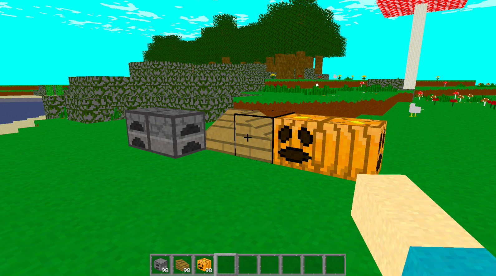
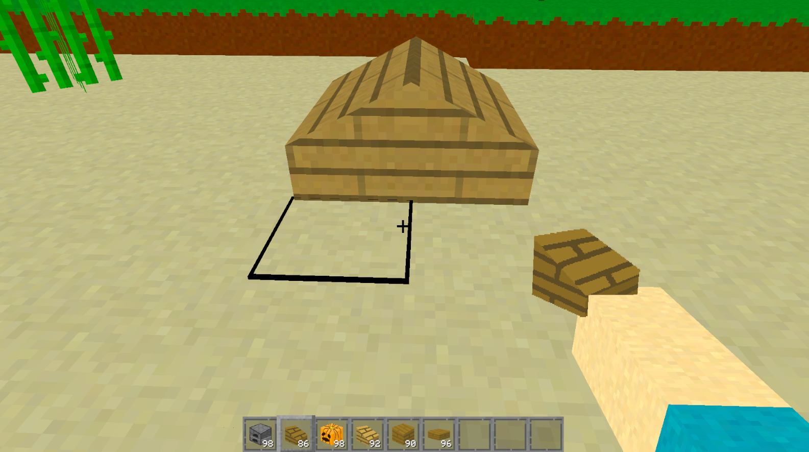
Along with blocks having a directional state, I also added that into the player's debug screen as well. So the player will know which direction they're facing. This isn't exactly helpful right now, but I'm sure it'll be helpful at some point in the future.
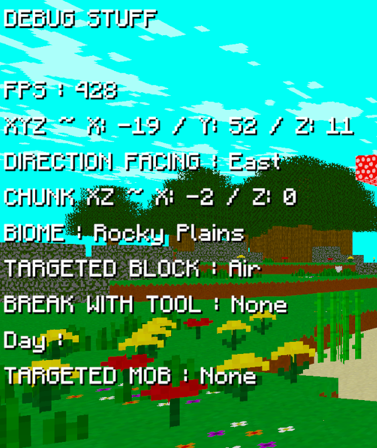
I also made it where blocks that are supposed to only be semi-transparent like the stained glass variants actually are. Meaning it took this long for Glass and White Stained Glass to actually look different. The slight tint to these windows is quite nice.
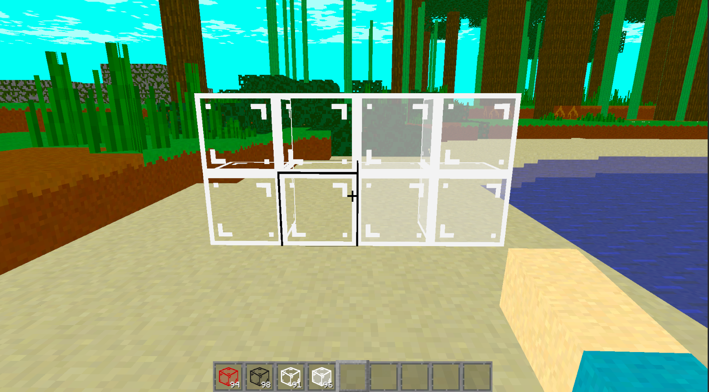
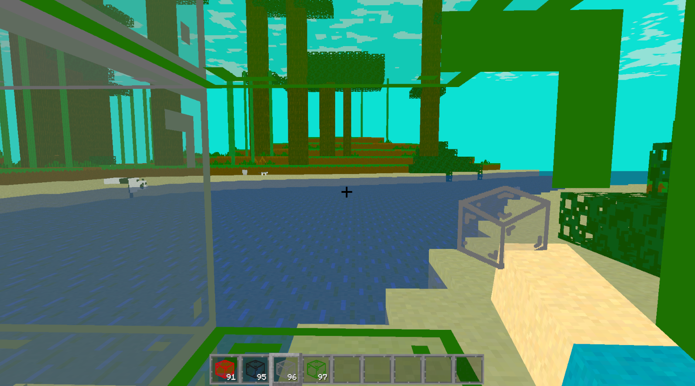
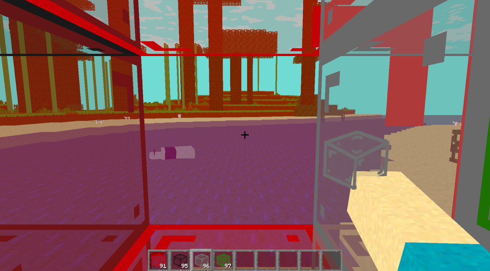
This next feature I am extremely happy about. I now have Water and Lava in the game. In the World Realm (Main World), the terrain now has a sea level. With that, water will spawn in those areas creating ponds, lakes, and rivers. I also made it where sand will spawn around these sources of water, and clay under the water. Which by the way, means the player finally has a way to get clay, which means they can also now get the brick blocks in survival.
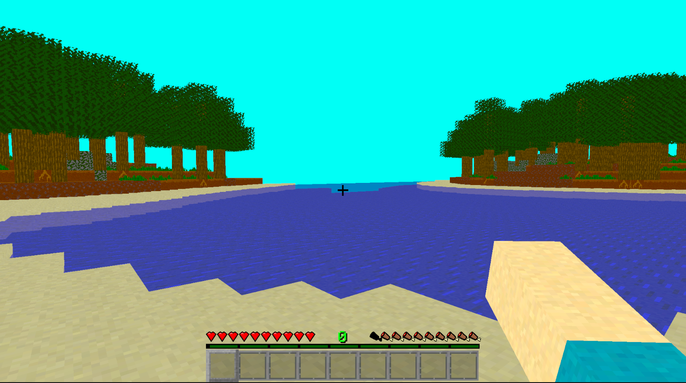
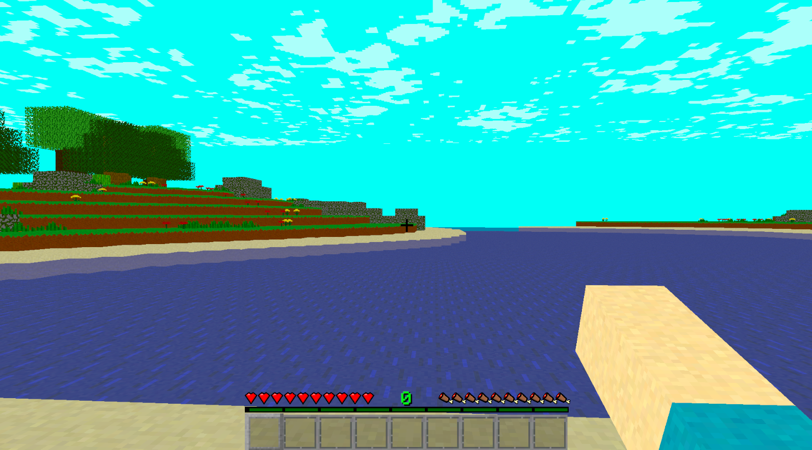
Lava right now can only spawn in the Inferno Realm. I actually have two biomes in the Inferno Realm: Desolate Hills and Lava Depths. Basically the hills are, well giant hills, and the depths are where you will find giant pools of lava. This makes the terrain in that realm even more hellish.
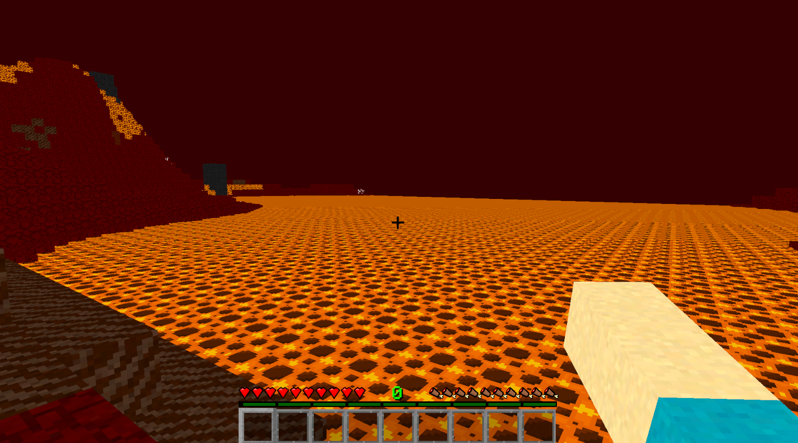
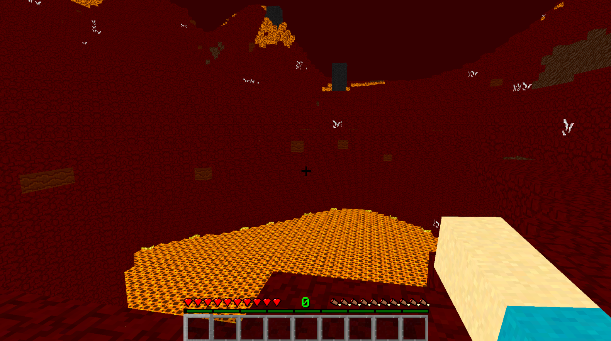
And I of course gave a screen overlay while the player is in those liquids. Also adding in some slighyly different movement, making them fall and move slower. Another also: the player can use a bucket to pick up water and lava. They can't do anything with those items, but that's a future problem. The player can also mine the blocks in water and place blocks while in the water and lava by the way. Just thought I'd put it out there, yah.
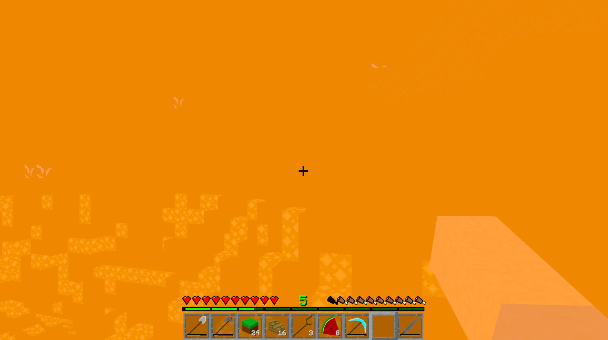
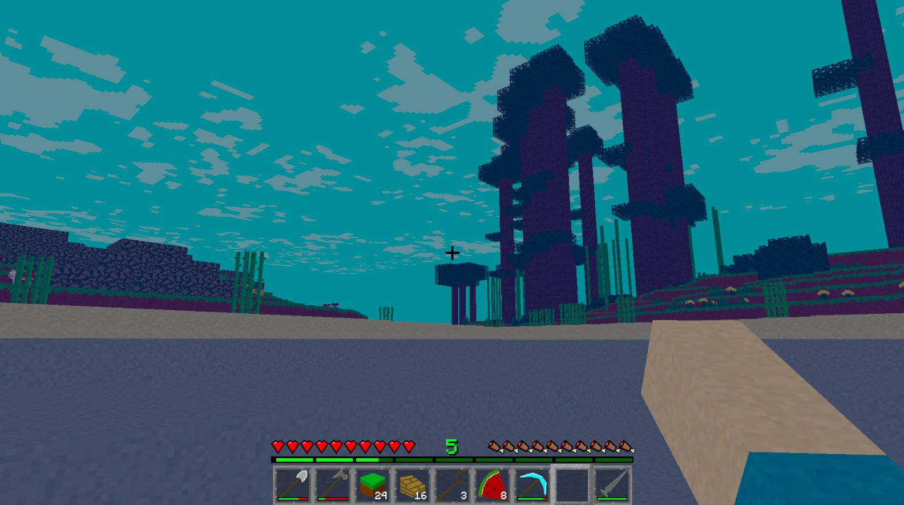
I'm not done talking about the water and lava yet. It's pretty cool stuff. They run through a different texture system than the rest of the blocks in the game. I did this so that I could make the textures a little more dynamic. Or should I say advanced. Get it? The title of this devlog is: Advanced Blocks. Anyways, the water and lava textures will slowly move to the side making them look like they're actually moving. The textures also slowly merge (lerp) from one texture to another and back again. This is so the water and lava will feel a touch more alive. If I explained it all badly, then you'll see what I mean in the videos below.
This next bit is something I only thought of while doing some gameplay testing last minute. I decided that I don't want chests to be in this version of the game. But that lead me to a problem: there is no way for the player to get rid of most items. The tools and armour would naturally wear out, and blocks could technically be placed. But I don't want that, and those things wouldn't work for all items in the game anyways. So I made it where the player can drop items from their inventory by pressing Q. Shift + Q to drop the whole stack. The player can't drop tools or armour though. I would have to apply durability to dropped items and apply that for when the player picks up the items, and I just didn't want to do that coding right now honestly. It'd only take two seconds, but my brain is getting tired, and it's not that important for those items.
Blocks
As you've probably read above I did add in water and lava. They aren't technically blocks though. They will be once I get in flowing water, but that won't be in the Alpha 1 version of the game. Maybe Alpha 2. So right now Water and Lava are basically just the top faces of the block. I'm not going to show a picture of that. I'm sure you can imagine.
Anyways, I also added in Sugarcane. It will spawn on the sand around water. I couldn't find an easy way to get the Sugarcane to spawn only on the block next to the water though. Maybe this will be another thing to work on for the Alpha 2 version of the game. But for now, it still looks very nice.
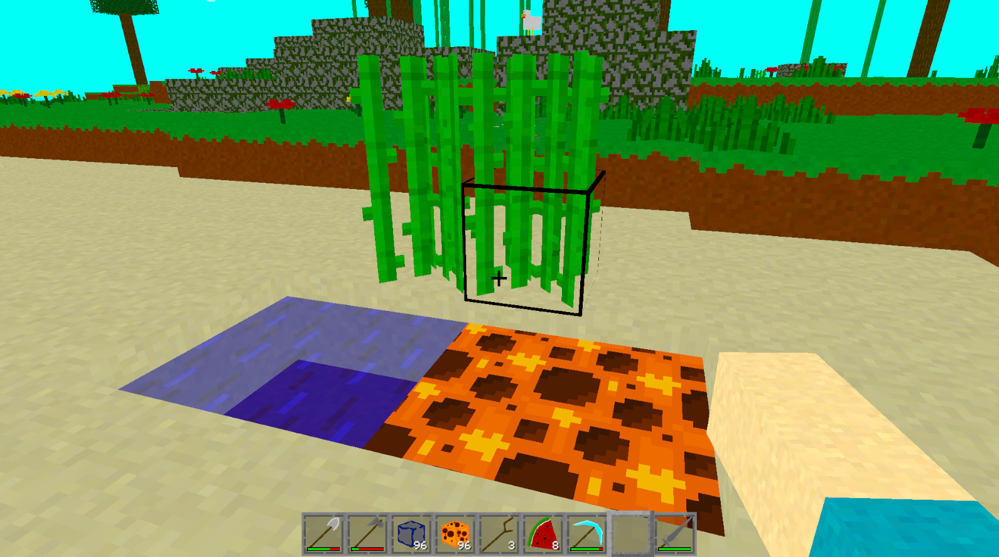
Recipes
Ok, not every single recipe is done. But every recipe for items they player can get in survival is done. With some exceptions. Some items could be set up for crafting, but since they aren't fully implemented (like TNT or the Wooden Storage Crate), I decided to not give them a crafting recipe. I'm only keeping them in because they can still be used as decorative blocks in creative mode. Anyways, I'd show off a bunch of recipes here, but I think I'll just start slowly adding them onto the Recipes page of this website.
Conclusion
This devlog update is probably a blessing for the builders of the world. Nicer looking world with the water now added in, and the blocks now being able to be rotated. There's also the other additions which are just nice to have done.
I have only a handful of tasks left to do before I can say that Alpha 1 will be released. When it is released, I will find a way to make it downloable from the website, or at least a link to download it someplace else.
The next devlog update will probably knock out those last few tasks honestly. I'm not sure what the exact theme of that devlog will be, but I know at least a couple of the features I'll add to it. I might just decided to make it a progress update, but I really feel like it'll be better to center it around a theme. I do have a couple of ideas, so we'll see.